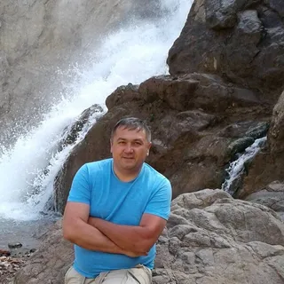
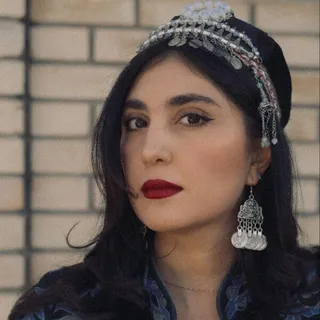
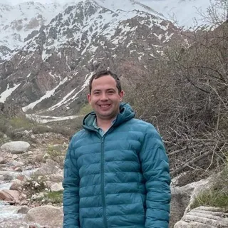
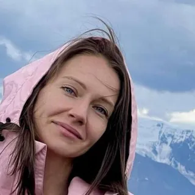
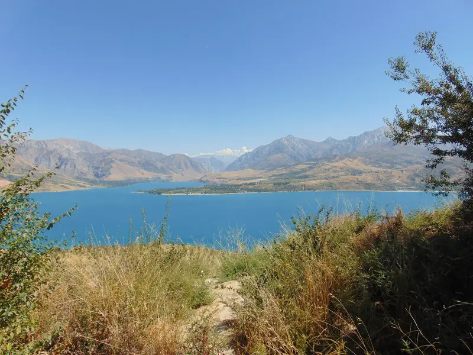

Tours privados y en grupo con guías locales a los que les encanta lo que hacen.
Es el corazón de la antigua Ruta de la Seda y sigue siendo uno de los grandes destinos por descubrir del mundo. Por eso los viajeros que van no pueden dejar de hablar de él.
Samarcanda es más o menos tan antigua como Roma. Durante siglos, las caravanas transportaron seda, especias e ideas entre China y Europa a través de estas mismas ciudades.
Samarcanda, Bujará, Jiva y Shahrisabz son ciudades vivas que recorres a pie, no ruinas detrás de un cordón.
Sin trámites de visado para ciudadanos de EE. UU., España y muchos otros países en estancias de hasta 30 días. Solo reserva tu vuelo y ven.
Tu dinero rinde mucho aquí. Un día privado con guía suele costar menos que una excursión en autobús en grupo por Europa occidental.
Así era Italia antes del turismo de masas. Patios de azulejos y miradores de montaña casi solo para ti.
Un día, ciudades de cúpulas azules de la Ruta de la Seda; al siguiente, cumbres nevadas del Tian Shan, cascadas y viñedos. Todo cerca de Taskent.
Nacimos y crecimos aquí. Conocemos cada rincón.
Grupos pequeños, conexiones reales, sin prisas.
Más allá de los monumentos. Dentro de la cultura.
Un día en las montañas: un complejo de investigación solar, una mezquita sagrada a 1.500 m, cata de vinos y un buen almuerzo de montaña.
Ver el tour completo →Petroglifos antiguos, un teleférico, cascadas, enterramientos zoroástricos y almuerzo en una casa de té tradicional junto al embalse.
Ver el tour completo →Taskent, Samarcanda y Bujará con un guía profesional, transporte cómodo y restaurantes y alojamientos seleccionados.
Ver el tour completo →De las antiguas ciudades de la Ruta de la Seda a las cumbres salvajes del Tian Shan: Uzbekistán tiene más de lo que imaginas.
Somos un pequeño equipo de guías locales con experiencia, con base en Taskent. Hablamos inglés, ruso y español, y nos importa de verdad que cada visitante viva una experiencia auténtica de Uzbekistán.

21 años como guía. Nacido y criado en Taskent: gastronomía, cultura y las ciudades de la Ruta de la Seda.

De Taskent a Samarcanda, Bujará, Kokand y el Tian Shan.

Las rutas clásicas de la Ruta de la Seda, y los rincones escondidos fuera de los caminos trillados.

Pasos nevados, laderas boscosas y cañones del Tian Shan occidental.
En el corazón de Asia Central, en la Ruta de la Seda entre China y Europa, y más fácil de alcanzar de lo que crees.

Sí. A los viajeros siempre les sorprende lo seguro y tranquilo que se siente: la delincuencia callejera es baja y la hospitalidad es motivo de orgullo nacional. Como en cualquier viaje, consulta las recomendaciones de viaje oficiales de tu país antes de salir; además, tu guía te acompaña en todo momento.
Los ciudadanos de EE. UU., España, el resto de la UE y muchos otros países pueden visitar Uzbekistán sin visado durante un máximo de 30 días. Solo necesitas un pasaporte válido para toda tu estancia. Las normas pueden cambiar, así que comprueba los requisitos vigentes para tu pasaporte antes de volar (sobre todo si tienes pasaporte latinoamericano). Estaremos encantados de ayudarte.
Uzbekistán está en Asia Central, en la antigua Ruta de la Seda entre China y Europa, y limita con Kazajistán, Kirguistán, Tayikistán, Afganistán y Turkmenistán. Desde EE. UU., España y Latinoamérica normalmente se vuela con una sola escala (en Estambul, Dubái o algún aeropuerto europeo) hasta Taskent. Te recogemos en el aeropuerto.
Uzbekistán es un país de mayoría musulmana, pero laico y muy abierto a los visitantes. La ropa informal de todos los días está bien. Al visitar mezquitas y lugares sagrados, cubre hombros y rodillas (las mujeres quizá quieran llevar un pañuelo ligero). Tu guía te avisará antes de cada parada.
En hoteles y zonas turísticas principales, a menudo sí; en otros lugares, menos. Justo por eso un guía local marca tanta diferencia. Todos nuestros guías hablan inglés, y varios también hablan ruso y español.
La moneda local es el som. Las tarjetas funcionan en la mayoría de los hoteles y en muchos restaurantes de las grandes ciudades, y es fácil encontrar cajeros, pero en los bazares y los pueblos pequeños solo se paga en efectivo. Los dólares estadounidenses se cambian con facilidad.
La primavera (de abril a junio) y el otoño (de septiembre a octubre) son ideales: días cálidos, noches frescas y todo en flor o en plena cosecha. El verano es caluroso en las ciudades, pero perfecto en las montañas. El invierno trae esquí en el Tian Shan.
Por supuesto. Cualquier tour puede ser privado, y diseñamos itinerarios a medida según tus intereses, fechas y ritmo. Cuéntanos qué te gustaría y te enviaremos un plan y un precio en menos de 24 horas.
Cuéntanos cuándo vienes, qué te interesa y cuántas personas son en tu grupo. Te responderemos en menos de 24 horas.
Planear mi viaje